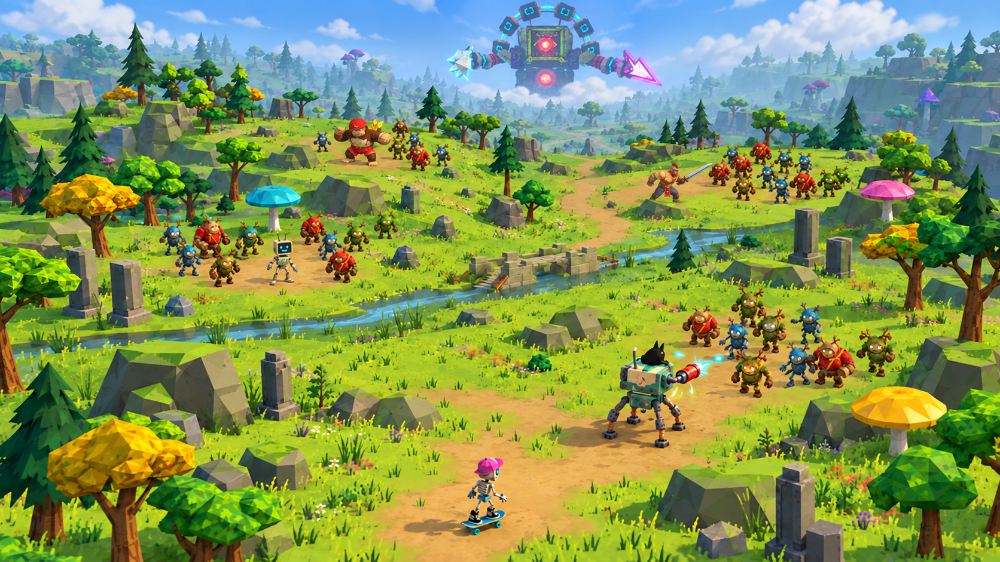
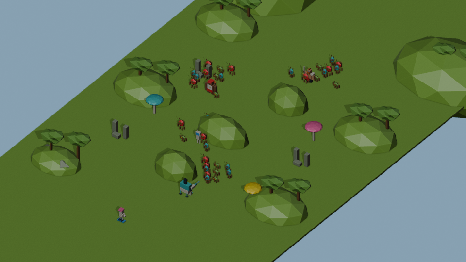
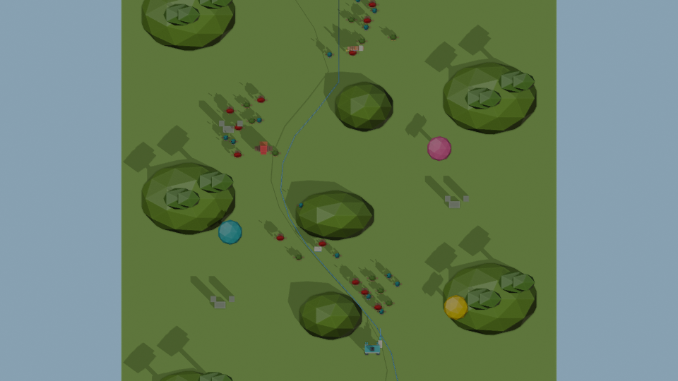
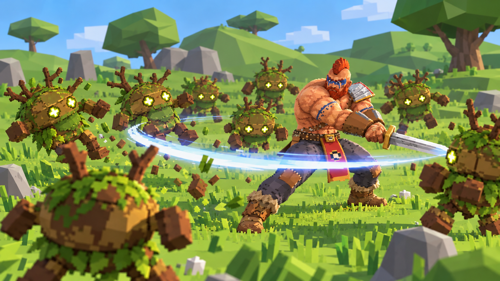
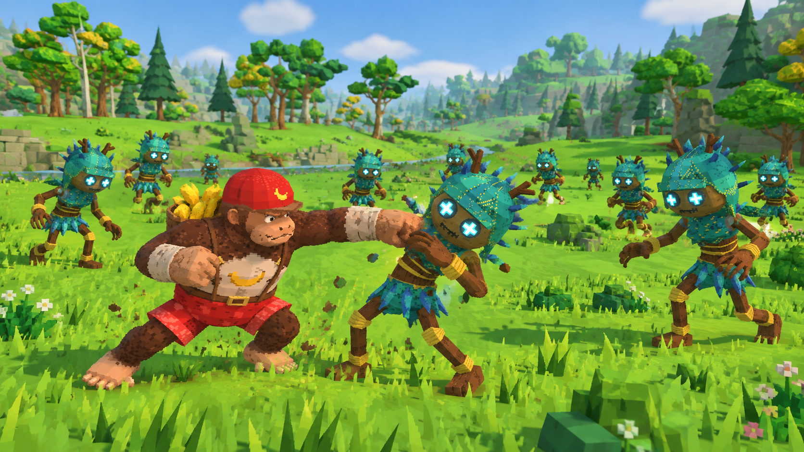
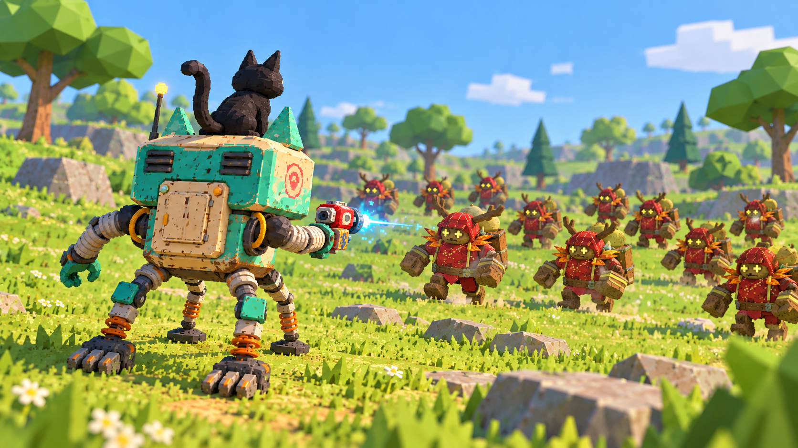
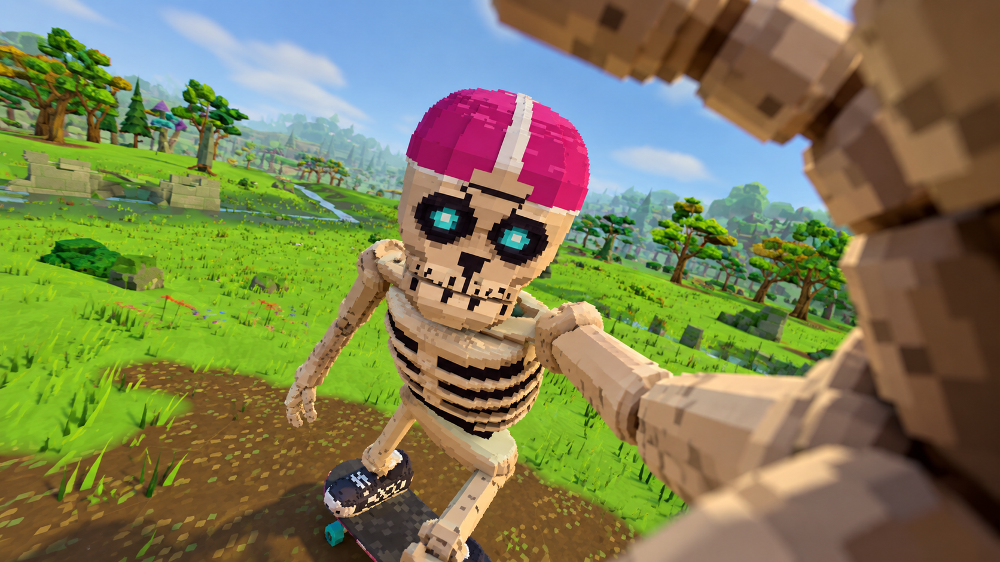
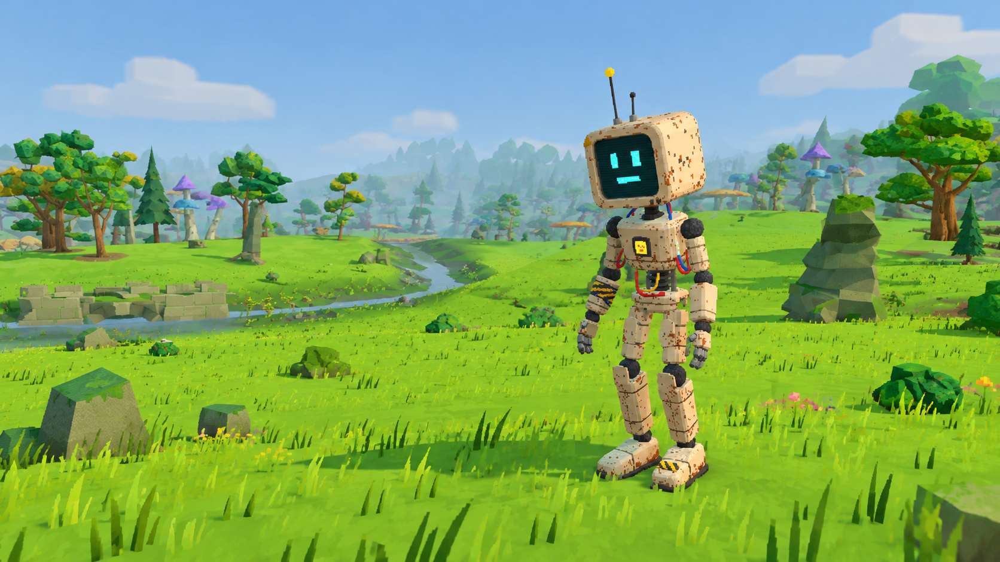

18 секунд · 24 кадра/с · упрощённая сцена Blender
Сцена Blender · Исходный скрипт
Плавная извилистая траектория без наведения на каждого героя. Низкий пролёт около 1,2 м; один подъём перед скелетом. 40 мобов — по 10 у каждой зоны, все на земле. У воина меч. Робот повёрнут спиной к камере, стреляет бластером в группу в 4,5–9 м впереди. Глитч без придуманной атаки.







